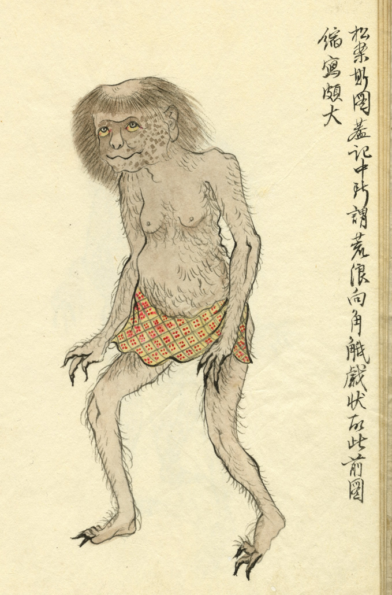

河童。肌は茶色く、全身に薄く毛が生えている。髪は茶色で、頭頂が禿げて、凹んでいる。顔には茶色い斑が入り、目玉は丸く黄色い。手足の指は3本で、爪が鋭い。腰に、赤い模様の入った黄色い腰布を巻いている。
著作者：稲垣寒翠（稲垣武十郎）／出典：親書誌：U426_nichibunken_0148：河伯俗話；カッパゾクワ／日付：2009／資源識別子：U426_nichibunken_0148_0006_0000
Copyright (c)2010- International Research Center for Japanese Studies, Kyoto, Japan. All rights reserved.